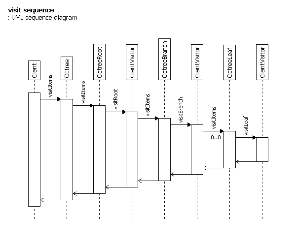

A technical article for programmers, with code and introductory documentation for a generalised octree data structure in Ruby. It abstracts algorithms with a visitor variant. (700 words) (400 code lines) (version 2.0)
The purpose was to translate a reusable octree component in C++ to Ruby. The original aimed for generalisation and compactness. This translation follows the principal structure, and gains more generality from the language. It also becomes simpler, although probably more bulky and slower.
The result allows any object type, and a range of algorithmic applications, without handing over complete access. It is minimal in storage.
The represented octree is cubical and axis aligned, partitions are axis aligned, partitions divide in half, each level partitions the previous level in all three axises.
Algorithms implemented using the original Octree include: selecting photons within a spherical shell region, and finding nearest object intersection.
The principal design structure is a division into two halves: octree and item/visitor. The octree is used as-is, the item and visitor are client-extended/written classes. The secondary structure, perpendicular to the primary, is a layering into interface and implementation. The interface is the three main classes. The implementation handles containment and item access polymorphically.
The item class is extended to provide the octree with a way to determine an item's relation to cells. This is used in insertion and removal.
The visitor class is like the conventional Visitor: defining an externalised operation on the main data structure. In this case however, the octree is constant and the visitor is the object modified. This provides callbacks to read tree nodes for visit queries.
Attention to the numerical nature of the data structure is needed: OO thinking might first suggest a cubelet class knowing its boundary. But separate cubelets share boundary faces, and this must be represented carefully numerically, otherwise gaps will appear between them. This leads to modelling divisions of eight cubelets, rather than individuals. Ultimately the dimensions were ‘factored’ into their minimal form: the size of the root. They are then passed through and divided at each level, in traversal. A further benefit is that this needs no storage in the tree.
During a visit, execution jumps back and forth between client and framework. First the client calls the octree to start. The octree calls back to the visitor, which can then call the framework again to continue further. This is repeated at each tree level, allowing the client visitor to collect state and steer the traversal.

The client interface is in one file containing one class: Octree. The implementation is in two file. One contains the classes for the Composite (relating to structure). The other contains the rest of the supporting classes (relating to manipulation).
Each class definition is in sections. The basic ones are: initializer, commands, and queries. Two other classes are used, but not shown: Vector3fc, and Vector3f. These are an ordinary 3D vector: a constant superclass, with a mutable subclass.
The core component is 379 lines of code. The total, including the support classes, is 905 lines. (Less than half the C++ version.)
Ruby 1.8. The component and support has been run on Ruby1.8.2 i386-mswin32.
Everything is available in normal text file form in this archive: http://www.hxa.name/articles/content/octree-general-ruby_hxa7241_2005.zip
require 'Hxa7241_General'
require 'OctreeAuxiliary'
require 'OctreeImplementation'
module Hxa7241_Graphics
# The client needs to prepare two classes to use #Octree:
#
# ==item class
# Client needs to extend the item class with two methods:
#
# ===isOverlappingCell?
# Called by octree to get relation of item to cell.
# Taking parameters:
# * cellLowerCorner: #Vector3fc
# * CellUpperCorner: #Vector3fc
#
# ===getSubcellOverlaps?
# Called by octree to get relation of item to subcell octants.
# (Allows more efficent calculation, since boundaries are shared. But client
# could implement by delegating to isOverlappingCell.)
# Taking parameters:
# * cellsLowerPos: #Vector3fc
# * cellsMiddlePos: #Vector3fc
# * cellsUpperPos: #Vector3fc
# Return:
# 8 bits, each a bool corresponding to a subcell, the high bit for subcell
# 7, the low bit for subcell 0.
# Subcell numbering:
# y z 6 7
# |/ 2 3 4 5
# -x 0 1
# in binary:
# y z 110 111
# |/ 010 011 100 101
# -x 000 001
# eg: subcell (high x, high y, low z) is number 3, and flagged in bit 3
#
# ==visitor class
# Client needs to provide a visitor class.
#
# This is a reversal of the Visitor pattern: it allows an operation to be
# performed with the octree, except the octree is merely read from and it is
# the visitor that is modified.
#
# The visit methods are called by the tree nodes during the visit operation.
# The parameters supply the cell and boundary info. The implementation can
# call visit on the supplied cell.
#
# The implementation of #visitBranch! needs to make the #OctreeData to be given
# in each call of visit.
#
# Subcell numbering:
# y z 6 7
# |/ 2 3 4 5
# -x 0 1
# in binary:
# y z 110 111
# |/ 010 011 100 101
# -x 000 001
# eg: subcell (high x, high y, low z) is number 3, and flagged in bit 3
#
# The visitor class must have three methods:
#
# ===visitRoot!
# Called by #Octree when visit traversal is at the root.
# To continue deeper, implementation calls visit on rootCell, supplying
# octreeData and self as arguments.
# Taking parameters:
# * octreeData: #OctreeData
# * rootCell: #OctreeCell/#OctreeBranch/#OctreeLeaf
#
# ===visitBranch!
# Called by #Octree when visit traversal is at a branch.
# To continue deeper, implementation calls visit on any/all subcells,
# supplying a new octreeData and self as arguments. The new octreeData is
# made with its constructor that will take the original octreeData and the
# subcell index. Check subcell values before use, since they can be nil.
# Taking parameters:
# * octreeData: #OctreeData
# * subCells: #Array, length 8, of #OctreeCell/#OctreeBranch/#OctreeLeaf or nil
#
# ===visitLeaf!
# Taking parameters:
# Called by #Octree when visit traversal is at a leaf.
# * octreeData: #OctreeData
# * items: #Array, of items
# An octree volume spatial index.
#
# client must define an visitor class, and methods for item class.
#
# In construction, max items per cell is ignored where max levels is reached.
#
# The octree is cubical and axis aligned, partitions are axis aligned,
# partitions divide in half, each level partitions the previous level in all
# three axiss.
#
# Storage is contracted or expanded as needed by item insertion and removal.
#
# ===implementation
# The octree structure follows the Composite pattern.
#
# For the visit query, the visitor provides callbacks to read tree nodes for
# carrying out the visit operation.
#
# ===invariants
# * dimensions is an #OctreeDimensions (owned)
# * rootCell can be nil, or an #OctreeCell derivative
#
class Octree
# Constructs a particular format of octree.
# ===parameters options
# * #Vector3fc position, Numeric size,
# Integer max item refs per cell, Integer max depth of tree
# * #Octree (copy)
#
def initialize( *args )
# specify
if 4 == args.length &&
args[0].kind_of?(Vector3fc) &&
args[1].kind_of?(Numeric) &&
args[2].kind_of?(Integer) &&
args[3].kind_of?(Integer)
position, sizeOfCube, maxItemsPerCell, maxLevelCount = args
@dimensions = OctreeDimensions.new( position, sizeOfCube,
maxItemsPerCell, maxLevelCount )
@rootCell = nil
# copy
elsif 1 == args.length &&
args[0].kind_of?(Octree)
other = args[0]
@dimensions = OctreeDimensions.new( other.dimensions )
@rootCell = Hxa7241.copy?( other.rootCell )
else
throw "invalid arguments"
end
end
attr_reader :dimensions, :rootCell
protected :dimensions, :rootCell
#-- commands -------------------------------------------------------------------
# Add ref(s) to the item to the octree.
# (If an item has non-zero volume, it may have refs in multiple cells.)
# ===return is the item inserted -- false if item not inside root bound
# ===see #removeItem!
def insertItem!( item )
# make data
data = OctreeData.new( @dimensions )
# check if item overlaps root cell
if item.isOverlappingCell?( data.bound.positionOfLowerCorner,
data.bound.positionOfUpperCorner )
@rootCell = Hxa7241_Graphics::insertItem_( @rootCell, data, item )
end
nil
end
# Removes ref(s) to the item from the octree.
# (If an item has non-zero volume, it may have refs in multiple cells.)
# ===return is the item removed -- false if item wasn't present
# ===see #insertItem!
def removeItem!( item )
if @rootCell
@rootCell = @rootCell.removeItem!( @dimensions.maxItemsPerCell,
[0], item )
end
nil
end
#-- queries --------------------------------------------------------------------
# Execute a visit query operation.
#
def visit?( visitor )
octreeData = OctreeData.new( @dimensions )
visitor.visitRoot!( octreeData, @rootCell )
end
# Provides stats on the octree.
# ===return
# A #Hash containing:
# * 'leafCount' => number of leafs in octree
# * 'itemRefCount' => number of item references (not always equal to the
# number of different items -- since, if the items are not points,
# multiple leafs may refer to the same item)
# * 'depthLargest' => largest depth of octree
#
def getInfo?
info = { 'leafCount' => 0,
'itemRefCount' => 0,
'depthLargest' => 0 }
@rootCell.getInfo?( info ) if @rootCell
info
end
# Reports if the octree is empty.
#
def isEmpty?
nil == @rootCell
end
# Gives the position supplied at construction.
#
def position
@dimensions.positionOfLowerCorner
end
# Gives the size supplied at construction.
#
def size
@dimensions.size
end
# Gives the leaf pointer limit supplied at construction.
#
def maxItemCountPerCell
@dimensions.maxItemsPerCell
end
# Gives the depth limit supplied at construction.
#
def maxLevelCount
@dimensions.maxLevelCount
end
end
end # module Hxa7241_Graphics
require 'Hxa7241_General'
require 'Vector3fc'
module Hxa7241_Graphics
# Global octree data.
#
# Constant.
#
# ===invariants
# * positionOfLowerCorner is a #Vector3fc (owned)
# * size is a Float, positive
# * maxItemsPerCell is a Integer, >= 1
# * maxLevel is a Integer, positive
#
class OctreeDimensions
# ===parameters options:
# * #Vector3fc positionOfLowerCorner, Numeric size,
# Integer max items per cell, Integer max levels
# * #OctreeDimensions (copy)
#
def initialize( *args )
# specify
if 4 == args.length &&
args[0].kind_of?(Vector3fc) &&
args[1].kind_of?(Numeric) &&
args[2].kind_of?(Integer) &&
args[3].kind_of?(Integer)
positionOfLowerCorner, size,
maxItemsPerCell, maxLevelCount = args
@positionOfLowerCorner = Vector3fc.new( positionOfLowerCorner )
@size = size.abs.to_f
@maxItemsPerCell = maxItemsPerCell > 0 ? maxItemsPerCell : 1
@maxLevel = maxLevelCount > 0 ? maxLevelCount - 1 : 0
@maxLevel = MAX_LEVEL if @maxLevel > MAX_LEVEL
# copy
elsif 1 == args.length &&
args[0].kind_of?(OctreeDimensions)
other = args[0]
@positionOfLowerCorner = Vector3fc.new( other.positionOfLowerCorner )
@size = other.size
@maxItemsPerCell = other.maxItemsPerCell
@maxLevel = other.maxLevel
else
throw "invalid arguments"
end
end
#-- queries --------------------------------------------------------------------
attr_reader :positionOfLowerCorner,
:size,
:maxItemsPerCell,
:maxLevel
protected :maxLevel
def maxLevelCount
@maxLevel + 1
end
# Says whether to subdivide a leaf.
# ===parameters
# * itemCount: Integer
# * level: Integer
# ===return true or false
#
def isSubdivide?( itemCount, level )
(itemCount > @maxItemsPerCell) && (level < @maxLevel)
end
def to_s
"{ #{@positionOfLowerCorner}, #{@size}, " +
"#{@maxItemsPerCell}, #{@maxLevel} }"
end
#-- constants ------------------------------------------------------------------
MAX_LEVEL = 23
end
# Geometric data for the bound of an octree cell.
#
# Constant.
#
# Subcell numbering:
# y z 110 111
# |/ 010 011 100 101
# -x 000 001
#
# ===invariants
# * positionOfLowerCorner is a #Vector3fc (owned)
# * positionOfUpperCorner is a #Vector3fc (owned)
# * center is a #Vector3fc (owned), midway between
# positionOfLowerCorner and positionOfUpperCorner
# * circumSphereRadius is a Float, positive
#
class OctreeBound
# ===parameters options:
# * #Vector3fc positionOfLowerCorner, Numeric size
# * #OctreeBound parentCellBound, Integer subCellIndex (quasi-copy)
# * #OctreeBound (copy)
# * none (default)
#
def initialize( *args )
# specify
if 2 == args.length &&
args[0].kind_of?(Vector3fc) &&
args[1].kind_of?(Numeric)
positionOfLowerCorner, size = args
@positionOfLowerCorner = Vector3fc.new( positionOfLowerCorner )
@positionOfUpperCorner = positionOfLowerCorner + Vector3fc.new(size)
@center =
(@positionOfLowerCorner + @positionOfUpperCorner) * 0.5
@circumSphereRadius = (Vector3fc::HALF * size).length?
# quasi-copy
elsif 2 == args.length &&
args[0].kind_of?(OctreeBound) &&
args[1].kind_of?(Integer)
parentCellBound, subCellIndex = args
lowMidHighPoints = [ parentCellBound.positionOfLowerCorner,
parentCellBound.center,
parentCellBound.positionOfUpperCorner ]
@positionOfLowerCorner =
Vector3fc.new( lowMidHighPoints[ subCellIndex & 1].x,
lowMidHighPoints[(subCellIndex >> 1) & 1].y,
lowMidHighPoints[(subCellIndex >> 2) & 1].z )
@positionOfUpperCorner =
Vector3fc.new( lowMidHighPoints[( subCellIndex & 1) +1].x,
lowMidHighPoints[((subCellIndex >> 1) & 1) +1].y,
lowMidHighPoints[((subCellIndex >> 2) & 1) +1].z )
@center = (@positionOfLowerCorner + @positionOfUpperCorner) * 0.5
@circumSphereRadius = parentCellBound.circumSphereRadius * 0.5
# copy
elsif 1 == args.length &&
args[0].kind_of?(OctreeBound)
other = args[0]
@positionOfLowerCorner = Vector3fc.new( other.positionOfLowerCorner )
@positionOfUpperCorner = Vector3fc.new( other.positionOfUpperCorner )
@center = Vector3fc.new( other.center )
@circumSphereRadius = other.circumSphereRadius
# default
elsif args.empty?
@positionOfLowerCorner = Vector3fc.new( Vector3fc.ZERO )
@positionOfUpperCorner = Vector3fc.new( Vector3fc.ONE )
@center = Vector3fc.new( Vector3fc.HALF )
@circumSphereRadius = Vector3fc.HALF.length
else
throw "invalid arguments"
end
end
#-- queries --------------------------------------------------------------------
attr_reader :positionOfLowerCorner,
:positionOfUpperCorner,
:center,
:circumSphereRadius
def to_s
"{ #{@positionOfLowerCorner}, " + "
"#{@positionOfUpperCorner}, #{@center}, #{@circumSphereRadius} }"
end
end
# Global and local octree cell data.
#
# To be made during each level of tree descent, so storage is avoided, except to
# hold one at the root.
#
# Constant.
#
# Subcell numbering:
# y z 110 111
# |/ 010 011 100 101
# -x 000 001
#
# ===invariants
# * bound is a #OctreeBound (owned)
# * level is a Integer, positive
# * dimensions is a #OctreeDimensions
#
class OctreeData
# ===parameters options:
# * #OctreeDimensions
# * #OctreeData parentCellData, Integer subCellIndex (quasi-copy)
# * #OctreeData, #OctreeDimensions (quasi-copy)
#
def initialize( *args )
if 1 == args.length &&
args[0].kind_of?(OctreeDimensions)
dimensions = args[0]
@bound = OctreeBound.new( dimensions.positionOfLowerCorner,
dimensions.size )
@level = 0
@dimensions = dimensions
# quasi-copy
elsif 2 == args.length &&
args[0].kind_of?(OctreeData) &&
args[1].kind_of?(Integer)
parentCellData, subCellIndex = args
@bound = OctreeBound.new( parentCellData.bound, subCellIndex )
@level = parentCellData.level + 1
@dimensions = parentCellData.dimensions
# quasi-copy
elsif 2 == args.length &&
args[0].kind_of?(OctreeData) &&
args[1].kind_of?(OctreeDimensions)
other, dimensions = args
@bound = OctreeBound.new( other.bound )
@level = other.level
@dimensions = dimensions
else
throw "invalid arguments"
end
end
#-- queries --------------------------------------------------------------------
attr_reader :bound,
:level,
:dimensions
# Says whether to subdivide a leaf.
# ===parameters
# * itemCount: Integer
# ===return true or false
#
def isSubdivide?( itemCount )
@dimensions.isSubdivide?( itemCount, @level )
end
def to_s
"{ #{@bound}, #{@level}, #{@dimensions.object_id} }"
end
end
end # module Hxa7241_Graphics
require 'Hxa7241_General'
require 'OctreeAuxiliary'
module Hxa7241_Graphics
private
# Base for implementing Octree nodes, in a Composite pattern.
#
# Currently empty...
#
class OctreeCell
#-- commands to implement
# insertItem!( octreeData, item )
# removeItem!( maxItemsPerCell, itemCount, item )
#-- queries to implement
# visit?( octreeData, visitor )
# getInfo?( info )
end
def Hxa7241_Graphics.insertItem_( octreeCell, octreeData, item )
# either forward to current cell, or make a new leaf
if octreeCell
octreeCell.insertItem!( octreeData, item )
else
OctreeLeaf.new.insertItem!( octreeData, item )
end
end
# Inner node octree cell.
#
# Stores eight child cells.
#
# Subcell numbering:
# y z 110 111
# |/ 010 011 100 101
# -x 000 001
#
# ===invariants
# * subCells is an Array (owned), length 8, of #OctreeCell derived or nil
#
class OctreeBranch < OctreeCell
# ===parameters options:
# * #OctreeData, Array items
# * #OctreeBranch (copy)
# * none (default)
#
def initialize( *args )
# specify
if 2 == args.length &&
args[0].kind_of?(OctreeData) &&
args[1].kind_of?(Array)
octreeData, items = args
@subCells = Array.new( 8 )
# insert items
items.each do |item|
insertItem!( octreeData, item )
end
# copy
elsif 1 == args.length &&
args[0].kind_of?(OctreeBranch)
other = args[0]
@subCells = other.subCells.collect do |subCell|
Hxa7241.copy?( subCell )
end
# default
elsif args.empty?
@subCells = Array.new( 8 )
else
throw "invalid arguments"
end
end
attr_reader :subCells
protected :subCells
#-- commands -------------------------------------------------------------------
# ===return
# a replacement object for itself (always self)
#
def insertItem!( octreeData, item )
# get subcell-item overlaps flags
bound = octreeData.bound
overlaps = item.getSubcellOverlaps?( bound.positionOfLowerCorner,
bound.center, bound.positionOfUpperCorner )
# loop through sub cells
8.times do |i|
# check if sub cell is overlapped by item
if 0 != (overlaps >> i) & 1
# make sub cell data
subCellData = OctreeData.new( octreeData, i )
# add item to sub cell
@subCells[i] = Hxa7241_Graphics::insertItem_( @subCells[i],
subCellData, item )
end
end
# always return self, since branchs cannot morph on insertion
self
end
# ===return
# a replacement object for itself (self, or new Leaf, or nil)
#
def removeItem!( maxItemsPerCell, itemCount, item )
branchItemCount = [0]
# remove from non-nil sub cells
8.times do |i|
if @subCells[i]
@subCells[i] = @subCells[i].removeItem!( maxItemsPerCell,
branchItemCount, item )
end
end
itemCount[0] += branchItemCount[0]
# decide whether to collapse this branch
if branchItemCount[0] > 0
# collapse to leaf
if branchItemCount[0] <= maxItemsPerCell
# all subcells *will* be leafs!
# because:
# a) if a branch has below it less item refs than the threshold,
# it collapses to a leaf (this method!)
# b) the total of item refs below this branch in the tree is less
# than the threshold
# c) therefore the number of item refs in any branch below this
# cell will be less than the threshold
# d) branchs below this cell will be collapsed before this branch,
# because the recursive 'removeItem' call is before the
# collapsing code
# so: if this branch will collapse to a leaf, then all its sub
# branchs (direct and indirect) will collapse to leafs, and that
# will happen before this branch.
leaf = OctreeLeaf.new( @subCells.compact )
# dont collapse
else
self
end
end
end
#-- queries --------------------------------------------------------------------
def visit?( octreeData, visitor )
visitor.visitBranch!( octreeData, @subCells )
end
def getInfo?( info )
# most of info is just passed through to subcells, but the
# 'depthLargest' property must be set to the maximum found in
# the subcells
thisDepth = info['depthLargest'] + 1
depthLargest = thisDepth
@subCells.compact.each do |subCell|
info['depthLargest'] = thisDepth
subCell.getInfo?( info )
if depthLargest < info['depthLargest']
depthLargest = info['depthLargest']
end
end
info['depthLargest'] = depthLargest
info
end
end
# Outer node octree cell.
#
# Stores item references.
#
# ===invariants
# * items is a Array (owned), of item objects
#
class OctreeLeaf < OctreeCell
# ===parameters options:
# * Array of #OctreeLeaf (copy plural)
# * #OctreeLeaf (copy)
# * none (default)
#
def initialize( *args )
# copy plural
if 1 == args.length &&
args[0].kind_of?(Array)
others = args[0]
@items = Array.new
others.each do |other|
throw "invalid arguments" unless other.kind_of?(OctreeLeaf)
@items.concat( other.items )
end
# copy
elsif 1 == args.length &&
args[0].kind_of?(OctreeLeaf)
other = args[0]
@items = other.items.clone
# default
elsif args.empty?
@items = Array.new
else
throw "invalid arguments"
end
end
attr_reader :items
protected :items
#-- commands -------------------------------------------------------------------
# ===return
# a replacement object for itself (self, or new #OctreeBranch)
#
def insertItem!( octreeData, item )
# only insert if item not already present
unless @items.include?( item )
# check if leaf should be subdivided
unless octreeData.isSubdivide?( @items.length + 1 )
# append item to collection
@items.push( item )
self
else
# subdivide by making branch and adding items to it
OctreeBranch.new( octreeData, @items + [item] )
end
else
self
end
end
# ===return
# a replacement object for itself (self, or nil)
#
def removeItem!( maxItemsPerCell, itemCount, item )
# remove
@items.delete( item )
itemCount[0] += @items.length
# check if leaf is now empty, so this leaf can be garbaged
@items.empty? ? nil : self
end
#-- queries --------------------------------------------------------------------
def visit?( octreeData, visitor )
visitor.visitLeaf!( octreeData, @items )
end
def getInfo?( info )
info['leafCount'] += 1
info['itemRefCount'] += @items.length
info['depthLargest'] += 1
info
end
end
end # module Hxa7241_Graphics
The source code is available according to the following license:
———
Copyright (c) 2004-2005, Harrison Ainsworth / HXA7241.
Permission is hereby granted, free of charge, to any person obtaining a copy of this software and associated documentation files (the "Software"), to deal in the Software without restriction, including without limitation the rights to use, copy, modify, merge, publish, distribute, and/or sell copies of the Software, and to permit persons to whom the Software is furnished to do so, provided that the above copyright notice(s) and this permission notice appear in all copies of the Software and that both the above copyright notice(s) and this permission notice appear in supporting documentation.
THE SOFTWARE IS PROVIDED "AS IS", WITHOUT WARRANTY OF ANY KIND, EXPRESS OR IMPLIED, INCLUDING BUT NOT LIMITED TO THE WARRANTIES OF MERCHANTABILITY, FITNESS FOR A PARTICULAR PURPOSE AND NONINFRINGEMENT OF THIRD PARTY RIGHTS. IN NO EVENT SHALL THE COPYRIGHT HOLDER OR HOLDERS INCLUDED IN THIS NOTICE BE LIABLE FOR ANY CLAIM, OR ANY SPECIAL INDIRECT OR CONSEQUENTIAL DAMAGES, OR ANY DAMAGES WHATSOEVER RESULTING FROM LOSS OF USE, DATA OR PROFITS, WHETHER IN AN ACTION OF CONTRACT, NEGLIGENCE OR OTHER TORTIOUS ACTION, ARISING OUT OF OR IN CONNECTION WITH THE USE OR PERFORMANCE OF THIS SOFTWARE.
Except as contained in this notice, the name of a copyright holder shall not be used in advertising or otherwise to promote the sale, use or other dealings in this Software without prior written authorization of the copyright holder.